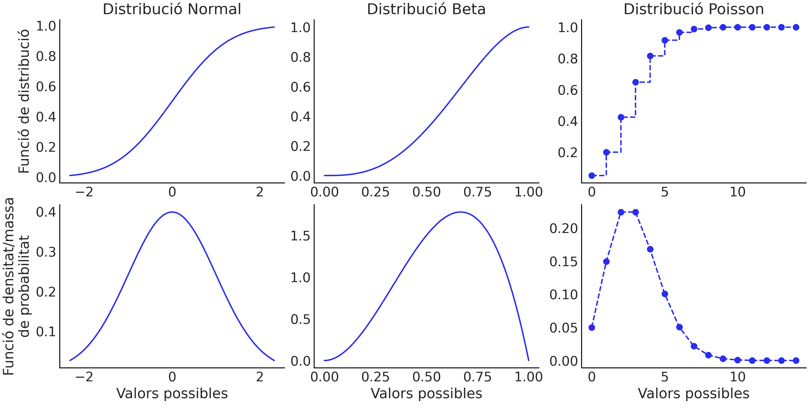
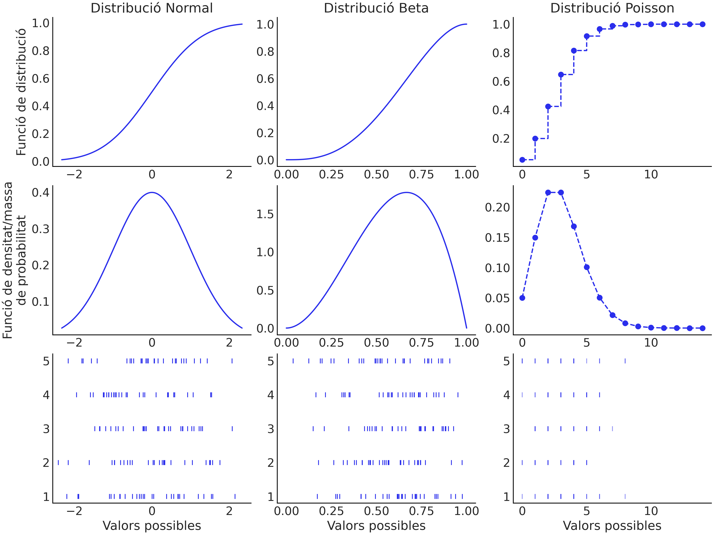
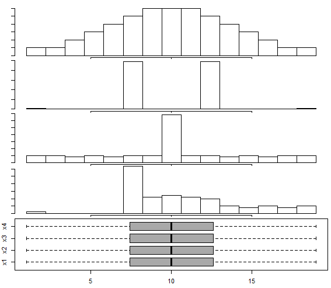

Com visualitzar incertesa i models probabilistics
a: PyDataBCN 2023
ponent: Oriol Abril Pla
Qui soc
- Membre de PyMC i ArviZ
- Mantenidor de programari lliure
- Consultor sobre modelització bayesiana
- Instructor a IntuitiveBayes
Conceptes estadístics útils per al taller
Conceptes estadístics útils per al taller
Variable aleatòria
Variable aleatòria
Estadística frequentista: probabilitat com a freqüència en repetir el procés infinites vegades
Estadística bayesiana: probabilitat com a seguretat en cadascun dels possibles resultats
Variable aleatòria
Estadística frequentista: probabilitat com a freqüència en repetir el procés infinites vegades
Estadística bayesiana: probabilitat com a seguretat en cadascun dels possibles resultats
Variable aleatòria
Matemàticament
- Funció de distribució (CDF)
- Funció de densitat/massa de probabilitat (PDF/PMF)
Variable aleatòria
Variables aleatòries en context
Variables aleatòries en context
Visualització de dades
Cal?
Visualització de dades
Visualització de dades
![Diagrama il·lustratiu de l'espai de diseny de visualitzacions, que conté un nombre immens de possibilitats. La majoria no són adients per a la nostra tasca, algunes són acceptables, i només un grapat són bones sol·lucions. A l'esquerra mostra un bon procés de diseny: el ventall de visualizacions conegudes és molt gran, les considerades no són tantes però també són nombroses i per tant, contenen una visualització que és bona solució. A la dreta hi mostra un mal procés de diseny: el nombre de visualitzacions conegudes es petit, per tant les visualitzacions considerades només poden ser menys que les conegudes; en aquest cas, només hi ha una solució acceptable dins de l'espai conegut, i cap dins del considerat.](imatges/espai_diseny.png)
Fil a l'agulla
Quatre maneres de visualitzar mostres com a variables aleatòries
- Histograma
- Estimadors Nuclears de Densitat (KDE)
- Funcions de distribució empíriques (ECDF)
- Gràfics de punts per quantils
Histograma
Histograma
Decisions
El nombre de classes o l'amplada dels intervals de classe
Computació
- Escollir les classes
- Contar quantes mostres cauen dins de cada classe
Histograma
Com generar-lo amb ArviZ
plot_dist amb kind="hist".
Arguments d'interès:
hist_kwargs: diccionari amb opcions per configurar l'histograma generat amb la funció hist de matplotlib.
az.plot_dist(mostres, kind="hist");
az.plot_dist(mostres, kind="hist", hist_kwargs={"bins": 6});
ax = az.plot_dist(mostres, kind="hist", hist_kwargs={"bins": 30})
ax.set_xticks(np.linspace(-2, 2, 5));
Estimador nuclear de densitat (KDE)
Estimador nuclear de densitat (KDE)
Decisions
El nucli*
L'amplada de banda (o altres paràmetres del nucli)
Computació
- Escollir l'amplada de banda
- Calcular la contribució del nucli corresponent a cada punt i sumar-les
- Calcular la correció de frontera (opcional)
Estimador nuclear de densitat (KDE)
Com generar-lo amb ArviZ
Arguments d'interès:
bw: valor real per a l'amplada de banda o cadena de text amb alguna de les opcions per indicar algoritmes predefinits per calcular l'amplada de banda.
adaptive: booleà indicant si mantenir l'amplada de banda constant o adaptarla segons la regió de la distribució
az.plot_kde(mostres);
az.plot_kde(mostres, bw=0.05);
az.plot_kde(mostres, bw=1.5);
Gràfic de punts per quantils
Gràfic de punts per quantils
Decisions
Nombre de punts
Amplada de classe
Gràfic de punts per quantils
Computació
- Escollir l'amplada de classe i el nombre de punts
- Calcular tants quantils com punts es vulguin. Els quantils es calculen equiespaiats entre 0 i 1 (cap dels dos inclosos)
- Començant per l'esquerra:
- Mirar quants quantils queden dins de l'interval
quantil_actual + amplada_de_classe - Escollir la x per als punts com a
(quantil_actual + ultim_quantil_interval) / 2. - Apilar tants punts com quantils haguem trobat dins l'interval
- Repetir el procés considerant el quantil actual com al primer quantil fora de l'interval
Gràfic de punts per quantils
Computació
- Començant per l'esquerra:
- Mirar quants quantils queden dins de l'interval
quantil_actual + amplada_de_classe - Escollir la x per als punts com a
(quantil_actual + ultim_quantil_interval) / 2. - Apilar tants punts com quantils haguem trobat dins l'interval
- Repetir el procés considerant el quantil actual com al primer quantil fora de l'interval
Gràfic de punts per quantils
Com generar-lo amb ArviZ
Arguments d'interès:
nquantiles: nombre de punts pel gràfic generat
binwidth: amplada de classe
dotsize: ratio entre la mida dels punts i el binwidth
stackratio: distància vertical entre punts apilats
az.plot_dot(mostres);
az.plot_dot(mostres, stackratio=1.3);
az.plot_dot(mostres, dotsize=1.2);

az.plot_dot(mostres, binwidth=0.1);
Funció de distribució empírica (ECDF)
Funció de distribució empírica (ECDF)
Decisions
Cap*
Computació
- Ordenar les mostres
- Començant per l'esquerra, anar gràficant els esglaons, incrementant la y en
1/numero_de_mostresa cada mostra.
Funció de distribució empírica (ECDF)
Com generar-lo amb ArviZ
Arguments d'interès:
npoints: valor enter que indíca el nombre de punts a la quadrícula on evaluar la funció de distribució empírica.
az.plot_ecdf(mostres);
az.plot_ecdf(mostres, npoints=40);
Exemples: mans a l'obra!
Descarregueu aquest fitxer .csv. Conté les dades per als exercics que venen a continuació.
També heu d'instal·lar ArviZ.
Esperant l'autobús
Estàs esperant l'autobús per tornar a casa després de fer encàrrecs. La parada està a uns 15 minuts de casa caminant. Acaben d'actualitzar les pantalles a les parades i ara enlloc de donar un valor et permeten fer un gràfic d'incertesa amb mostres dels temps d'arribada esperats segons el seu model probabilistic.
Seure a l'autobús
Mateixa situació que l'anterior, però amb més dades disponibles. A més del temps que trigarà en arribar, també pots generar gràfics de la gent que hi haurà a l'autobús quan arribi. A la parada de moment hi ha 3 persones més esperant, i l'autobús té 37 seients i un aforament màxim de 136 places.
V5 o V7?
Encara una altra situació similar. Us trobeu en un punt intermedi entre dues parades de bus, una del V5 i una altra del V7. Voleu anar a un altre punt que també és intermedi entre tots dos. Quin d'ells agafarieu?.
Com visualitzar incertesa i models probabilistics
a: PyDataBCN 2023
ponent: Oriol Abril Pla